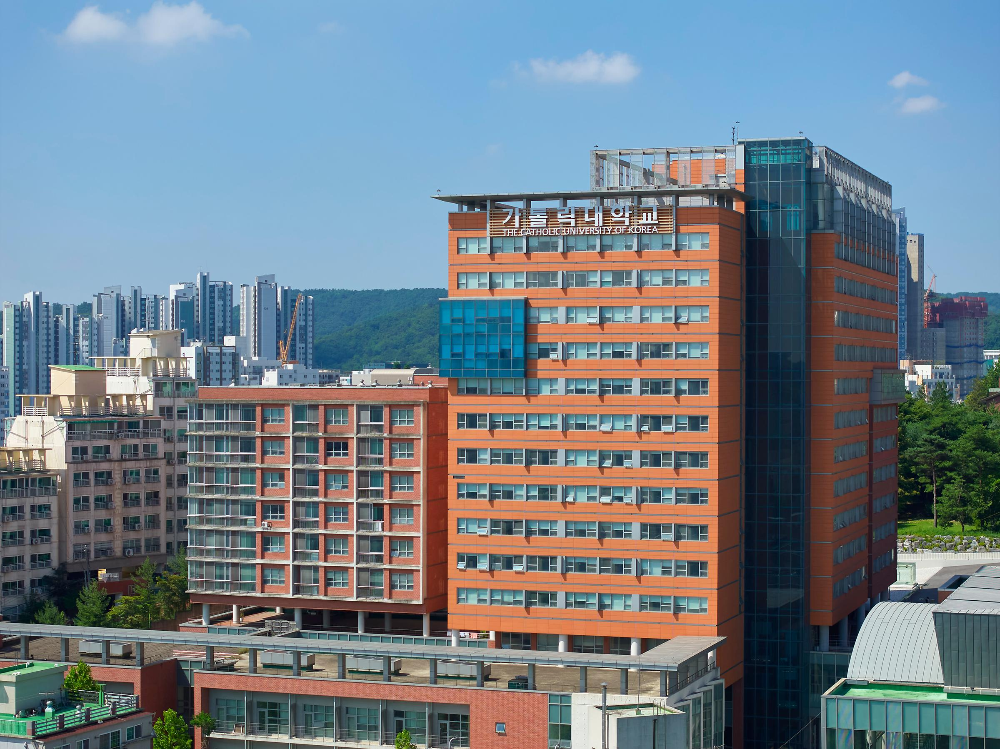
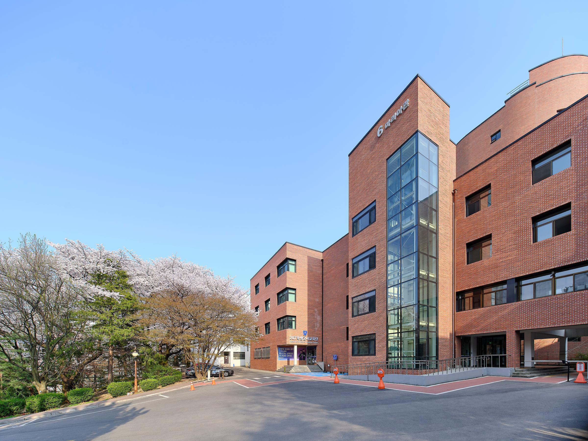

정문 바로 앞, 1층에 이마트24가 있는 건물

4층 카페 하랑이 있는 학교 중심 건물

엘리베이터가 있어 편한 학교 중심 건물

기숙사 로비에서 쉬어갈 수 있는 건물
정문에서 가까운 순서로 골라본 성심교정 네 곳을 소개합니다.
정문에서 가까운 순서대로 네 건물을 골라, 캠퍼스에 처음 온 사람도 헤매지 않고 둘러볼 수 있게 했다.
정문 바로 앞, 1층에 이마트24가 있는 건물

4층 카페 하랑이 있는 학교 중심 건물
엘리베이터가 있어 편한 학교 중심 건물

기숙사 로비에서 쉬어갈 수 있는 건물
정문에서 가장 가까운 김수한관을 시작으로 니콜스관, 마리아관을 거쳐 김수한관 4층과 이어지는 안드레아관에서 마무리하는 순서를 추천한다.